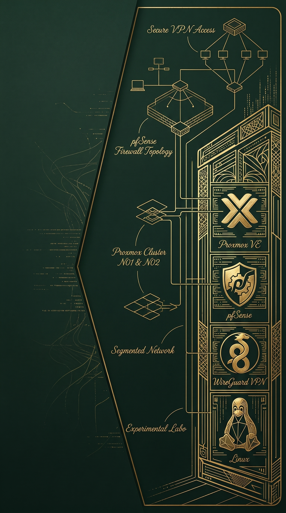

Réalisation 1 : Création d'un labo d'expérimentation
Contexte
Ce projet est né d'un besoin technique et matériel concret : mon ordinateur personnel manquait de ressources (CPU/RAM) pour faire fonctionner simultanément les nombreuses machines virtuelles nécessaires à mes études. Pour pallier cette limite, j'ai pris l'initiative de déployer un hyperviseur sur un matériel plus performant et d'y accéder à distance. Cette démarche initiale s'est rapidement transformée en la conception d'un véritable centre de données virtualisé (Homelab). Ce laboratoire constitue aujourd'hui le socle technique de l'ensemble de mes projets et me permet d'héberger tous mes environnements de travaux pratiques.
Objectifs
- Déployer un cluster de virtualisation (Proxmox VE) sur deux nœuds physiques pour répartir la charge des machines virtuelles et des conteneurs.
- Mettre en place un accès distant sécurisé (VPN WireGuard) pour administrer l'infrastructure et accéder aux ressources depuis n'importe où.
- Concevoir une topologie réseau segmentée avec un pare-feu principal (pfSense) pour assurer le routage et le filtrage des flux.
- Déployer diverses machines virtuelles (Windows, Linux, services) pour créer un environnement d'expérimentation complet pour mes TP.
Technologies utilisées
Bilan
Ce projet m'a permis de transformer une simple contrainte matérielle en une opportunité d'apprentissage majeure sur la gestion d'une infrastructure complète. J'ai particulièrement développé mes compétences en réseau et en sécurité lors de l'implémentation du tunnel WireGuard : il a fallu concevoir des règles de pare-feu précises sur pfSense pour autoriser le trafic entrant, tout en protégeant le reste du réseau interne. Aujourd'hui, je dispose d'un environnement bac à sable fluide et performant qui me permet d'expérimenter de nouvelles technologies (AD, Linux, supervision) et de réaliser l'intégralité de mes travaux pratiques en totale autonomie et mobilité.

Compétences travaillées
Gérer le patrimoine informatique
- Recenser et identifier les ressources numériques
- Gérer les sauvegardes
Travailler en mode projet
- Analyser les objectifs et les modalités d'organisation d'un projet
- Planifier les activités
Mettre à disposition des utilisateurs un service informatique
- Réaliser les tests d'integration et d'acceptation d'un service
- Déployer un service
Organisation de son développement professionnel
- Mettre en place son environnement d'apprentissage personnel
- Développer son projet professionnel